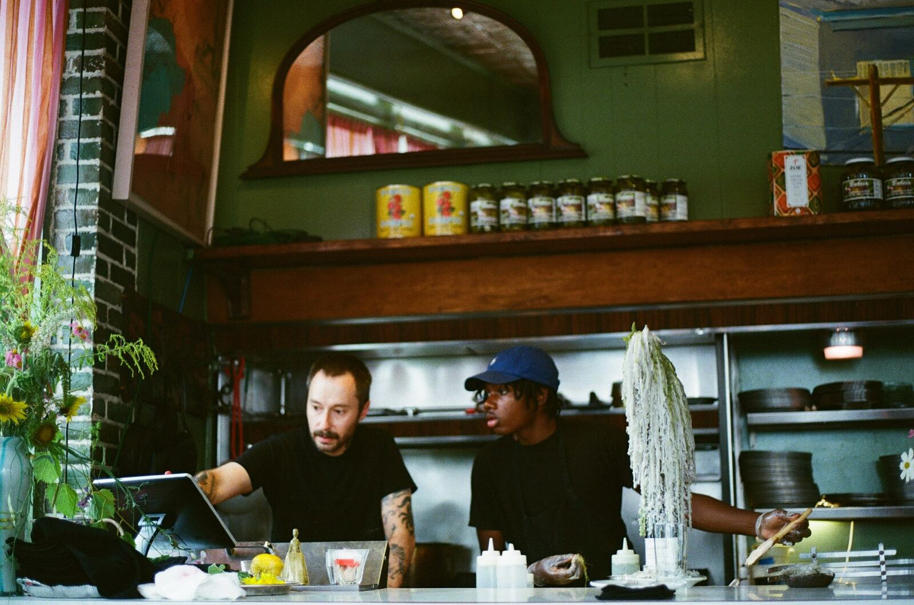
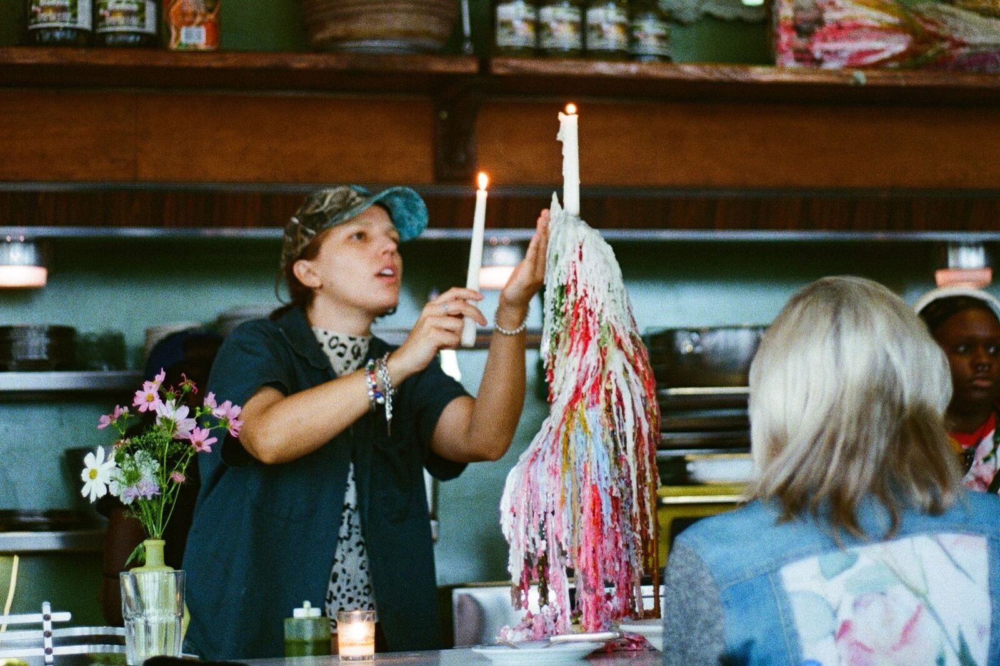
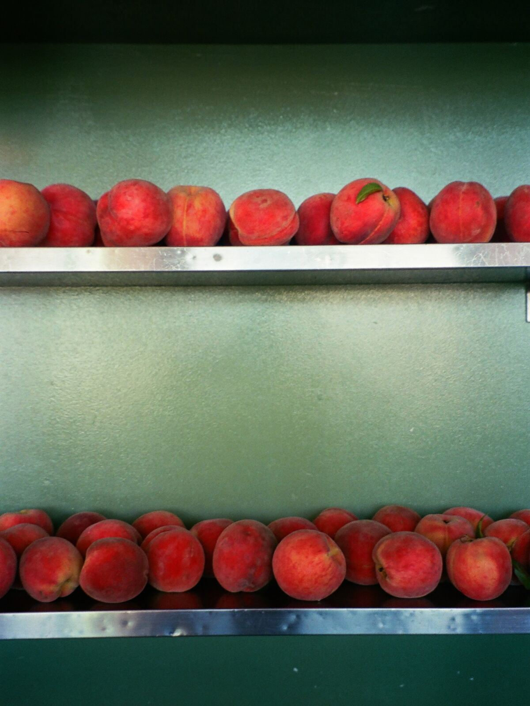
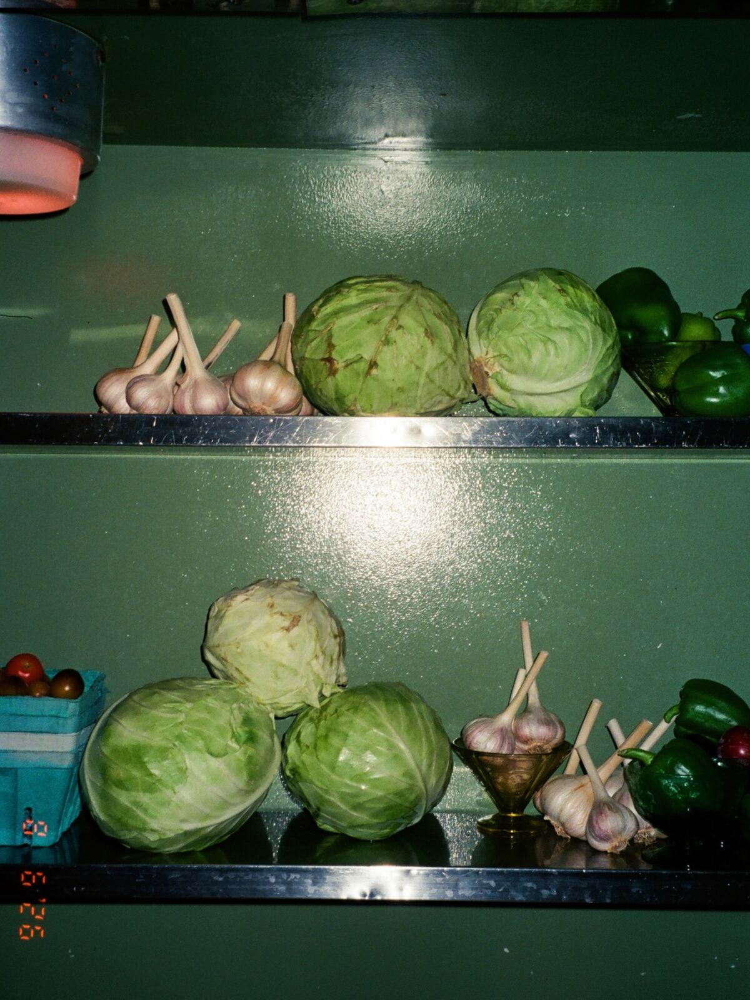
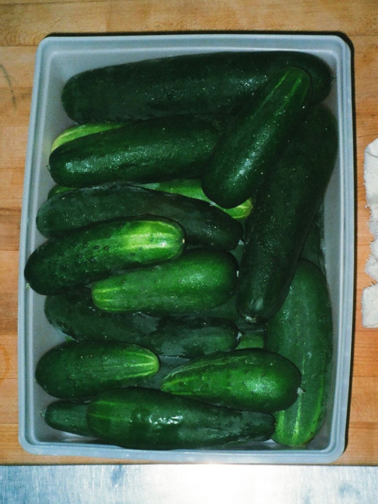
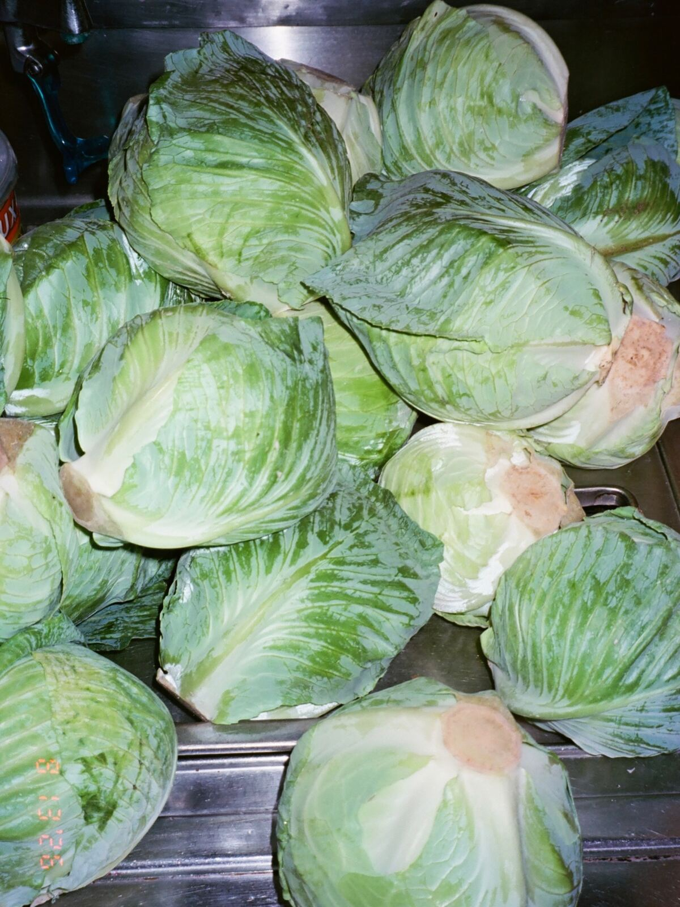

Witamy.
Polish American cooking, built on whatever Michigan farms have this week.

Awards and reviews
- Detroit Free Press2026 Restaurant of the Year
- The New York Times50 favorite restaurants in America
- The Detroit NewsThree stars
- Hour DetroitBest New Restaurants 2026
The room
Twenty-eight seats, a pressed-tin ceiling, and candles that never get replaced.
Mismatched vintage furniture, old woodwork, mirrors that do not match either, and flowers cut from the garden in the parking lot out back. The New York Times said eating here feels like a meal in "Grandma's sunroom."

This week
What the farms brought.
Lillian's Loaves, Amalgam Farms, Seedling Fruit, Sown In Peace, Order Up Organics, Ma Coen's, Marrow. The menu is written after the delivery, not before it.




Hours
- Sunday4pm-10pm
- Monday4pm-10pm
- TuesdayClosed
- Wednesday4pm-10pm
- Thursday4pm-10pm
- Friday4pm-11pm
- Saturday4pm-11pm
Where
10551 E Jefferson Ave
Detroit, MI 48214
East side, near the Islandview and West Village blocks. Reservations open thirty days out on Resy, for the dining room and the bar. Walk-ins welcome.